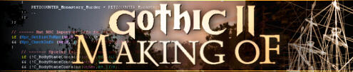

 'The Monastery comes to life' by Mattias
'The Monastery comes to life' by Mattias
|
Hi,
KaiRo asked me to do a 'making of' report about the story section. that's a complex topic - the story extends to most areas of game designing. even a summary would be too much to write down here... so we'll just graze a few topics instead.
have fun,
mattes
|
|
(this is where the god innos is worshipped)
the fire mages' monastery is one of the gothic 2 main locations. here's an excerpt from a regular story department workday - filling the monastery with life.
the basics are done; the level guys modelled the monastery with the corresponding rooms and locations while we created the characters along with the locally relevant happenings and actions.
taking the monastery... go!
First of all I create the monastery waynet. the net consists of unique waypoints and spans the whole world.

(the red lines designate the so-called 'WayNet')
all npcs (non-player characters) will move along these paths, and we can send them to each point of the net. most characters will be using daily routines: we're telling them what to do during a day's 24 hours - and at which waypoint. the monastery novices, for example, are supposed to work during daytime and sleep during the night. but that's not enough. i mean, we're in a monastery after all, and people in monasteries are known to pray, too... and the player should see this.
Since i don't want all novices to attend church at the same time (the rest of the monastery would be empty!), i send them to services at different times. this makes for some variety and lets the monastery look alive. but it's still not enough.
|
Each character has his own schedule
|
the problem is - we don't know at which time the player will be at a given point. in case of the monastery, i'll use a well-known game mechanism: sleep.
should the player go to bed and sleep to the next morning, he'll wake up at exactly 8:00. so I create several new schedules for 8.00; now I'm satisfied.
when the player sleeps through the night and gets up at 8:00, he'll see the novices return from their morning mass and start to go about their daily work.
(at exactly 8:00 the novices go to work)
now it's the characters' turn. let's take babo the novice.
(poor novice babo gets bullied around all the time)
he's a shy guy, one who gets bullied and doesn't do anything about it, but who remains helpful and humble. another (mean) novice who acquired a place in the monastery via his family's riches and fame replaced babo as the gardener.
from then on babo must sweep the yard, but he'll help the player with his monastery quests.
(by being involved with other characters the player will get a better grasp of the monastery community)
and when he becomes a novice himself, the player will have the chance to help babo regain his position as gardener...
here's a short excerpt from a dialogue between the player and babo:
| Player:
|
what's life in the monastery like?
|
| Babo:
|
it's not as if i wanted to complain, but i didn't think people were so strict. when you don't stick to the rules, you'll be punished. many novices want to study innos' teachings at the library to be prepared in case they are chosen.
but i think the best preparation for the trial of magic still is to fulfill the duties assigned to you.
|
| Player:
|
what's that about the chosen and the trial?
|
| Babo:
|
talk to brother igaraz. he knows about these things.
|
to incorporate this dialogue into the game, a lot of programming has to be done. here's the script for the dialogue:
(this is what the finished german dialogue script looks like)
Mattias Filler (to the portrait)
Piranha Bytes
Story & Game Design
|
|
|
- 'making of' archive -
|
|